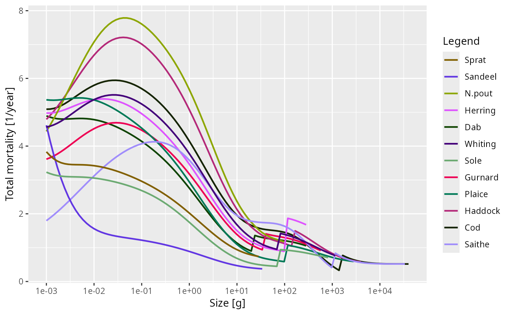

Calculate mortality contributions separately from the authoritative total mortality used in the dynamical equations. The getter evaluates the complete effective rate pipeline once at each requested state, then checks a declared complete decomposition against its total mortality.
Arguments
- object
A MizerParams or MizerSim object.
- rtol
Relative tolerance for the decomposition check. Default
1e-8.- atol
Absolute tolerance in 1/year. Default
1e-12.- ...
For MizerParams,
n,n_pp,n_otherandeffortdefault to the model's initial values andtdefaults to zero. For MizerSim,time_rangeselects saved times (all by default),tis an alias fortime_range, anddrop = TRUEdrops dimensions of length one, as ingetMort(). Simulation states and effort are taken from each saved time. Other arguments are passed to rate and diagnostic callbacks.- predation_by_species
Whether to refine built-in predation into one cause per predator species. The refinement is used only when its sum agrees with the effective predation mortality at every species and size; otherwise the aggregate predation cause is retained. For the built-in callback and its public alias, any selected simulation time requiring aggregate predation makes every selected time use that grouping. Custom callbacks are responsible for stable grouping across times. Default
FALSE.
Value
A MizerMortalityBreakdown list with total, a named list of
causes, plotting metadata, logical complete, an unavailable data
frame including time and reasons, and residual (total minus the sum of
supplied causes). total, causes and residual use the same shapes
as getMort(). The residual is a diagnostic difference, not an attributed
cause. Simulation causes and metadata must remain consistent through time.
Details
Built-in mortality is decomposed into predation, fishing, external mortality
and each additive contribution registered with setComponent() or
other_mort(). Replacing the outer Rates or Mort provider requires an
explicitly adopted decomposition through
setProcess(params, "consumers", mortality_fun = "myBreakdown").
Unsupported decomposition returns an incomplete report with a reason and the
authoritative total; it does not assign unexplained mortality to a cause.
A mortality_fun receives the model, n, n_pp, n_other, effort, t,
the complete rates list, total and process = "consumers". It returns a
list with causes (a named list of finite numeric species-by-size matrices)
and complete (one logical value). Optional metadata is a data frame with
id and any of label, owner, colour, linetype; id must name each
cause once. Optional unavailable is a data frame with id, owner and
reason columns. It is only allowed for incomplete decompositions.
Callback errors and malformed results are errors. A complete decomposition
must satisfy abs(total - sum(causes)) <= atol + rtol * abs(total) at every
species, size and saved time.
See also
Other summary functions:
getBiomass(),
getDiet(),
getEncounterByPrey(),
getGrowthCurves(),
getN(),
getSSB(),
getSteadyResidual(),
getTrophicLevel(),
getTrophicLevelBySpecies(),
getYield(),
getYieldGear()
Examples
mortality <- getMortByCause(NS_params)
mortality$complete
#> [1] TRUE
mortality$metadata
#> id label owner colour linetype
#> 1 predation Predation consumers #D55E00 solid
#> 2 fishing Fishing consumers red solid
#> 3 external External consumers grey solid
plot(mortality$total)
